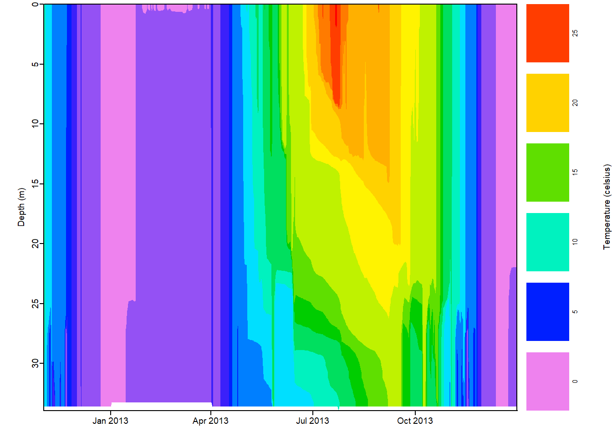

23 Predictive modeling for air pollution
Learning Objectives
After completing this tutorial you should be able to
- evaluate the correlation among predictor variables using
corrplot. - understand the need for training and test data sets and implement
tidymodelspackages to split data set into training and testing sets , understand the utility of cross-validation and implment it in thetidymodelsframework. - understand the basic utility of machine learning for prediction and classification and use the
tidymodelspackages to train and test a linear regression model & random forest model. - interpret root mean squared error (rmse) to assess the performance of prediction.
Before we start, download the 08_AirPollution project folder. Once you have downloaded it, unzip the project directory into your BI449 directory.
Your first step is creating a new R project in your project folder. To do this open Rstudio then use the drop down menu in the top right corner to select New Project and from there New Project in an existing directory. From there, navigate to and select the project folder create an R project. Remember, your Rproj sets the working directory so you need to make sure that it is in your project folder.
Next, open the Rmd file to follow along. Most of the code we will need to day is already in the Rmarkdown file, however, you should make sure that you comment all of the code in this set of activtiies line by line. Make sure your comments are informative and concise.
Before we start we need to install a few packages if you have not already done so. Remember, if you have a code chunk with code to install packages it will run every time you knit your document or use the run all chunks options. It is best to either comment out those lines of code, inactivate the code chunk using eval=FALSE or just run them directly in the console.
Here are the packages you need:
summarytoolsviptunerandomForestdoParallelGGallymaps
Let’s load our packages so we can get started.
# load libraries for data import & wrangling
library(tidyverse)
library(janitor)
library(skimr)
library(knitr)
# load libraries for correlation plots
library(corrplot)
library(GGally)
# load libraries for modeling & machine learning
library(tidymodels)
library(vip)
library(randomForest)
library(doParallel)
# load libraries for data visualization & mapping
library(ggplot2)
library(patchwork)
library(sf)
library(rnaturalearth)
library(maps)
library(conflicted)
conflict_prefer("mutate", "dplyr")
conflict_prefer("map", "maps")
# turn of sci notation
options(scipen=999)23.1 Data for predictive modeling
We will use air pollution data gathered using air pollution monitoring. In this system of monitors about 90% are located with in city leading to rural areas being severely under-monitored. Let’s take a little bit of time to think about the limitations of our approach and what type of data we will need to answer our question.
Our goal is to use this data set to train model that can accurately predict air pollution levels even when physical monitors are not present. A primary interest in air pollution is due to the adverse health outcomes related to exposure.
Before we start we should consider limitations of the data set we will look at to make sure that we can answer our question and to make sure that we don’t overstep in our interpretation.
► Question 23.1
Consider limitations of the data that you should keep in mind when interpreting and discussing your results.
► Solution
We will be using supervised machine learning to predict pollution levels. Here, we have two main types of data:
- A continuous outcome variable - this is the variable we want to predict
- A set of features or predictor variables used to predict the outcome variable.
In order to build and train a model you need corresponding data sets139 Corresponding means they should have the same/very similar spatial and temporal resolution.. The underlying principle is that if you determine the existing relationship and describe it mathematically using an existing data set, then you would also be able predict the value for that outcome variable for a new observation as long as you have values for the predictor variable.
► Question 23.2
For our example of creating a model with the goal of predicting pollution levels, what would be our outcome variable and what are potential features (or predictor variables)?
► Solution
With the rise of computational power available at our fingertips, Machine Learning and Artificial Intelligence approaches are increasingly being used to solve problems, especially when large data sets are involved. Unfortunately, this means it quickly turns into a black box where we dump in some outcome and predictor variables give it a good shake and take the “answer” we receive at face value.
To avoid this we need to start with a specific question in mind and carefully consider how our outcome and features are related. Good questions have a plausible explanation for why features predict the outcome and critically evaluate potential for variation in both the features and outcome over time.
We will be using a data set that was previously compiled by a researcher who studies air pollution, climate change and public health. We will import
The monitoring data comes from gravimetric monitors operated by the EPA that are designed to capture fine particulate matter (PM2.5) using a filtration system. Values are measure either daily or weekly. Our feature data set contains values for each of the 876 monitors (observations) and has been compiled from the EPA, NASA, US Census and National Center for Health Statistics. Most of the features have been taken for a circular area that surround the monitor itself (buffer).
For this module we will ask the central question Can we predict annual average air pollution concentrations at the resolution of zip code regional levels using predictor variables describing population density, urbanization, road density, satellite pollution data, and chemical modeling data?
23.2 Explore the data set
Let’s import the data set.
pm <- read_delim("data/air_pollution.csv", delim = ",") %>%
clean_names()Let’s take a quick look at the data types to make sure everything read in correctly.
pm %>%
glimpse()## Rows: 876
## Columns: 50
## $ id <dbl> 1003.001, 1027.000, 1033.100, 1049.100, 1055.001, 1069.000, 1073.002, 1073.101, 1073.101, 1073.101, 1073.200,~
## $ value <dbl> 9.597647, 10.800000, 11.212174, 11.659091, 12.375394, 10.508850, 15.591017, 12.399355, 11.103704, 13.114545, ~
## $ fips <dbl> 1003, 1027, 1033, 1049, 1055, 1069, 1073, 1073, 1073, 1073, 1073, 1073, 1073, 1073, 1089, 1097, 1097, 1101, 1~
## $ lat <dbl> 30.49800, 33.28126, 34.75878, 34.28763, 33.99375, 31.22636, 33.55306, 33.33111, 33.45972, 33.54528, 33.49972,~
## $ lon <dbl> -87.88141, -85.80218, -87.65056, -85.96830, -85.99107, -85.39077, -86.81500, -87.00361, -87.30556, -86.54917,~
## $ state <chr> "Alabama", "Alabama", "Alabama", "Alabama", "Alabama", "Alabama", "Alabama", "Alabama", "Alabama", "Alabama",~
## $ county <chr> "Baldwin", "Clay", "Colbert", "DeKalb", "Etowah", "Houston", "Jefferson", "Jefferson", "Jefferson", "Jefferso~
## $ city <chr> "Fairhope", "Ashland", "Muscle Shoals", "Crossville", "Gadsden", "Dothan", "Birmingham", "Not in a city", "No~
## $ cmaq <dbl> 8.098836, 9.766208, 9.402679, 8.534772, 9.241744, 9.121892, 10.235612, 10.235612, 8.161789, 9.303766, 10.2356~
## $ zcta <dbl> 36532, 36251, 35660, 35962, 35901, 36303, 35207, 35111, 35444, 35094, 35064, 35244, 35126, 35180, 35802, 3661~
## $ zcta_area <dbl> 190980522, 374132430, 16716984, 203836235, 154069359, 162685124, 26929603, 166239542, 385566685, 148994881, 1~
## $ zcta_pop <dbl> 27829, 5103, 9042, 8300, 20045, 30217, 9010, 16140, 3699, 14212, 11458, 32390, 21725, 13794, 21297, 6106, 246~
## $ imp_a500 <dbl> 0.01730104, 1.96972318, 19.17301038, 5.78200692, 16.49307958, 19.13927336, 41.83304498, 1.69765343, 0.0000000~
## $ imp_a1000 <dbl> 1.40960208, 0.85315744, 11.14489619, 3.86764706, 11.09645329, 16.67149654, 41.03200692, 3.98239278, 0.0291955~
## $ imp_a5000 <dbl> 3.33601181, 0.98514787, 15.17861538, 1.23114143, 14.67778782, 16.38548211, 36.00406256, 6.02132173, 0.1398356~
## $ imp_a10000 <dbl> 1.9879187, 0.5208189, 9.7253870, 1.0316469, 8.2200785, 8.0739624, 23.1790413, 4.5567731, 0.1474968, 2.6970796~
## $ imp_a15000 <dbl> 1.4386207, 0.3359198, 5.2472094, 0.9730444, 5.1612102, 4.7401296, 17.4524844, 4.3006226, 0.1623359, 2.9956557~
## $ county_area <dbl> 4117521611, 1564252280, 1534877333, 2012662359, 1385618994, 1501737720, 2878192209, 2878192209, 3423328940, 2~
## $ county_pop <dbl> 182265, 13932, 54428, 71109, 104430, 101547, 658466, 658466, 194656, 658466, 658466, 658466, 658466, 658466, ~
## $ log_dist_to_prisec <dbl> 4.648181, 7.219907, 5.760131, 3.721489, 5.261457, 7.112373, 6.600958, 6.526896, 9.789557, 7.301545, 3.972137,~
## $ log_pri_length_5000 <dbl> 8.517193, 8.517193, 8.517193, 8.517193, 9.066563, 8.517193, 11.156977, 10.915066, 8.517193, 9.683336, 10.7323~
## $ log_pri_length_10000 <dbl> 9.210340, 9.210340, 9.274303, 10.409411, 11.137360, 9.210340, 11.849658, 11.728685, 9.210340, 10.763385, 11.6~
## $ log_pri_length_15000 <dbl> 9.630228, 9.615805, 9.658899, 11.173626, 11.587258, 9.615805, 12.401245, 12.230208, 9.615805, 11.615710, 12.1~
## $ log_pri_length_25000 <dbl> 11.32735, 10.12663, 10.15769, 11.90959, 12.01356, 10.12663, 12.98762, 12.86472, 10.12663, 12.53777, 12.97635,~
## $ log_prisec_length_500 <dbl> 7.295356, 6.214608, 8.611945, 7.310155, 8.740680, 6.214608, 6.214608, 6.214608, 6.214608, 6.214608, 8.385759,~
## $ log_prisec_length_1000 <dbl> 8.195119, 7.600902, 9.735569, 8.585843, 9.627898, 7.600902, 9.075921, 8.949239, 7.600902, 7.600902, 9.204951,~
## $ log_prisec_length_5000 <dbl> 10.815042, 10.170878, 11.770407, 10.214200, 11.728889, 12.298627, 12.281645, 11.039001, 8.517193, 11.262645, ~
## $ log_prisec_length_10000 <dbl> 11.886803, 11.405543, 12.840663, 11.508944, 12.768279, 12.994141, 13.278416, 12.128956, 9.210340, 12.141008, ~
## $ log_prisec_length_15000 <dbl> 12.205723, 12.042963, 13.282656, 12.353663, 13.189489, 13.326132, 13.826365, 12.753045, 9.615805, 12.851710, ~
## $ log_prisec_length_25000 <dbl> 13.41395, 12.79980, 13.79973, 13.55979, 13.70026, 13.85550, 14.45221, 13.80017, 11.89377, 14.08915, 14.32725,~
## $ log_nei_2008_pm25_sum_10000 <dbl> 0.318035438, 3.218632928, 6.573127301, 0.000000000, 3.772775514, 0.909136688, 7.987614168, 5.412954990, 0.002~
## $ log_nei_2008_pm25_sum_15000 <dbl> 1.967358961, 3.218632928, 6.581917457, 3.282789151, 3.785646441, 3.174609213, 8.438952213, 6.643477321, 0.002~
## $ log_nei_2008_pm25_sum_25000 <dbl> 5.0673081, 3.2186329, 6.8758996, 4.8876655, 4.1605064, 3.1900077, 8.6510684, 7.8067729, 6.3623285, 7.3020666,~
## $ log_nei_2008_pm10_sum_10000 <dbl> 1.35588511, 3.31111648, 6.69187313, 0.00000000, 4.43719884, 0.92888890, 8.20975958, 5.77118113, 0.01654963, 6~
## $ log_nei_2008_pm10_sum_15000 <dbl> 2.26783411, 3.31111648, 6.70127741, 3.35004443, 4.46267932, 3.67473904, 8.64883455, 6.86889676, 0.01654963, 6~
## $ log_nei_2008_pm10_sum_25000 <dbl> 5.6287284, 3.3111165, 7.1488584, 5.1719202, 4.6783110, 3.7446287, 8.8580191, 8.0210715, 6.8919916, 7.5490587,~
## $ popdens_county <dbl> 44.265706, 8.906492, 35.460814, 35.330814, 75.367038, 67.619664, 228.777633, 228.777633, 56.861611, 228.77763~
## $ popdens_zcta <dbl> 145.7164307, 13.6395554, 540.8870404, 40.7189625, 130.1037411, 185.7391706, 334.5760426, 97.0888142, 9.593671~
## $ nohs <dbl> 3.300, 11.600, 7.300, 14.300, 4.300, 5.800, 7.100, 2.700, 11.100, 7.200, 2.700, 0.800, 2.800, 9.700, 1.200, 3~
## $ somehs <dbl> 4.900, 19.100, 15.800, 16.700, 13.300, 11.600, 17.100, 6.600, 11.600, 12.200, 9.800, 2.600, 8.200, 21.600, 3.~
## $ hs <dbl> 25.10, 33.90, 30.60, 35.00, 27.80, 29.80, 37.20, 30.70, 46.00, 32.20, 28.80, 12.90, 32.00, 39.30, 15.10, 39.0~
## $ somecollege <dbl> 19.700, 18.800, 20.900, 14.900, 29.200, 21.400, 23.500, 25.700, 17.200, 19.000, 26.300, 17.900, 28.900, 21.60~
## $ associate <dbl> 8.20, 8.00, 7.60, 5.50, 10.10, 7.90, 7.30, 8.00, 4.10, 6.80, 12.40, 5.20, 7.40, 5.20, 6.50, 6.60, 8.30, 4.60,~
## $ bachelor <dbl> 25.3, 5.5, 12.7, 7.9, 10.0, 13.7, 5.9, 17.6, 7.1, 14.8, 11.6, 35.5, 13.5, 2.2, 30.4, 7.8, 8.3, 7.6, 18.2, 9.5~
## $ grad <dbl> 13.500, 3.100, 5.100, 5.800, 5.400, 9.800, 2.000, 8.700, 2.900, 7.700, 8.300, 25.200, 7.100, 0.400, 23.300, 4~
## $ pov <dbl> 6.100, 19.500, 19.000, 13.800, 8.800, 15.600, 25.500, 7.300, 8.100, 10.500, 18.100, 2.100, 5.100, 13.300, 5.2~
## $ hs_orless <dbl> 33.30, 64.60, 53.70, 66.00, 45.40, 47.20, 61.40, 40.00, 68.70, 51.60, 41.30, 16.30, 43.00, 70.60, 19.40, 59.1~
## $ urc2013 <dbl> 4, 6, 4, 6, 4, 4, 1, 1, 1, 1, 1, 1, 1, 2, 3, 3, 3, 3, 4, 3, 1, 5, 4, 2, 6, 4, 4, 1, 1, 1, 1, 1, 4, 3, 3, 2, 2~
## $ urc2006 <dbl> 5, 6, 4, 5, 4, 4, 1, 1, 1, 1, 1, 1, 1, 2, 3, 3, 3, 3, 4, 3, 1, 5, 4, 2, 6, 5, 4, 1, 1, 1, 1, 1, 5, 3, 3, 2, 2~
## $ aod <dbl> 37.363636, 34.818182, 36.000000, 33.083333, 43.416667, 33.000000, 39.583333, 38.750000, 40.363636, 42.454545,~► Question 23.3
How many monitors do we have in the data set? Which column contains our outcome variable? Which contains our predictor variables?
► Solution
► Question 23.4
Take a look at the columns id, fips, and zcta - what data type are they? What information do you think they hold? Does the type of data they hold match their assigned data type?
► Solution
Let’s dig a little bit deeper using skim().
skim(pm)Table 23.1: Data summary
| Name | pm |
| Number of rows | 876 |
| Number of columns | 50 |
| _______________________ | |
| Column type frequency: | |
| character | 3 |
| factor | 3 |
| numeric | 44 |
| ________________________ | |
| Group variables | None |
Variable type: character
| skim_variable | n_missing | complete_rate | min | max | empty | n_unique | whitespace |
|---|---|---|---|---|---|---|---|
| state | 0 | 1 | 4 | 20 | 0 | 49 | 0 |
| county | 0 | 1 | 3 | 20 | 0 | 471 | 0 |
| city | 0 | 1 | 4 | 48 | 0 | 607 | 0 |
Variable type: factor
| skim_variable | n_missing | complete_rate | ordered | n_unique | top_counts |
|---|---|---|---|---|---|
| id | 0 | 1 | FALSE | 876 | 100: 1, 102: 1, 103: 1, 104: 1 |
| fips | 0 | 1 | FALSE | 569 | 170: 12, 603: 10, 261: 9, 107: 8 |
| zcta | 0 | 1 | FALSE | 842 | 475: 3, 110: 2, 160: 2, 290: 2 |
Variable type: numeric
| skim_variable | n_missing | complete_rate | mean | sd | p0 | p25 | p50 | p75 | p100 | hist |
|---|---|---|---|---|---|---|---|---|---|---|
| value | 0 | 1 | 10.81 | 2.58 | 3.02 | 9.27 | 11.15 | 12.37 | 23.16 | ▂▆▇▁▁ |
| lat | 0 | 1 | 38.48 | 4.62 | 25.47 | 35.03 | 39.30 | 41.66 | 48.40 | ▁▃▅▇▂ |
| lon | 0 | 1 | -91.74 | 14.96 | -124.18 | -99.16 | -87.47 | -80.69 | -68.04 | ▃▂▃▇▃ |
| cmaq | 0 | 1 | 8.41 | 2.97 | 1.63 | 6.53 | 8.62 | 10.24 | 23.13 | ▃▇▃▁▁ |
| zcta_area | 0 | 1 | 183173481.91 | 542598878.48 | 15459.00 | 14204601.75 | 37653560.50 | 160041508.25 | 8164820625.00 | ▇▁▁▁▁ |
| zcta_pop | 0 | 1 | 24227.58 | 17772.16 | 0.00 | 9797.00 | 22014.00 | 35004.75 | 95397.00 | ▇▇▃▁▁ |
| imp_a500 | 0 | 1 | 24.72 | 19.34 | 0.00 | 3.70 | 25.12 | 40.22 | 69.61 | ▇▅▆▃▂ |
| imp_a1000 | 0 | 1 | 24.26 | 18.02 | 0.00 | 5.32 | 24.53 | 38.59 | 67.50 | ▇▅▆▃▁ |
| imp_a5000 | 0 | 1 | 19.93 | 14.72 | 0.05 | 6.79 | 19.07 | 30.11 | 74.60 | ▇▆▃▁▁ |
| imp_a10000 | 0 | 1 | 15.82 | 13.81 | 0.09 | 4.54 | 12.36 | 24.17 | 72.09 | ▇▃▂▁▁ |
| imp_a15000 | 0 | 1 | 13.43 | 13.12 | 0.11 | 3.24 | 9.67 | 20.55 | 71.10 | ▇▃▁▁▁ |
| county_area | 0 | 1 | 3768701992.12 | 6212829553.56 | 33703512.00 | 1116536297.50 | 1690826566.50 | 2878192209.00 | 51947229509.00 | ▇▁▁▁▁ |
| county_pop | 0 | 1 | 687298.44 | 1293488.74 | 783.00 | 100948.00 | 280730.50 | 743159.00 | 9818605.00 | ▇▁▁▁▁ |
| log_dist_to_prisec | 0 | 1 | 6.19 | 1.41 | -1.46 | 5.43 | 6.36 | 7.15 | 10.45 | ▁▁▃▇▁ |
| log_pri_length_5000 | 0 | 1 | 9.82 | 1.08 | 8.52 | 8.52 | 10.05 | 10.73 | 12.05 | ▇▂▆▅▂ |
| log_pri_length_10000 | 0 | 1 | 10.92 | 1.13 | 9.21 | 9.80 | 11.17 | 11.83 | 13.02 | ▇▂▇▇▃ |
| log_pri_length_15000 | 0 | 1 | 11.50 | 1.15 | 9.62 | 10.87 | 11.72 | 12.40 | 13.59 | ▆▂▇▇▃ |
| log_pri_length_25000 | 0 | 1 | 12.24 | 1.10 | 10.13 | 11.69 | 12.46 | 13.05 | 14.36 | ▅▃▇▇▃ |
| log_prisec_length_500 | 0 | 1 | 6.99 | 0.95 | 6.21 | 6.21 | 6.21 | 7.82 | 9.40 | ▇▁▂▂▁ |
| log_prisec_length_1000 | 0 | 1 | 8.56 | 0.79 | 7.60 | 7.60 | 8.66 | 9.20 | 10.47 | ▇▅▆▃▁ |
| log_prisec_length_5000 | 0 | 1 | 11.28 | 0.78 | 8.52 | 10.91 | 11.42 | 11.83 | 12.78 | ▁▁▃▇▃ |
| log_prisec_length_10000 | 0 | 1 | 12.41 | 0.73 | 9.21 | 11.99 | 12.53 | 12.94 | 13.85 | ▁▁▃▇▅ |
| log_prisec_length_15000 | 0 | 1 | 13.03 | 0.72 | 9.62 | 12.59 | 13.13 | 13.57 | 14.41 | ▁▁▃▇▅ |
| log_prisec_length_25000 | 0 | 1 | 13.82 | 0.70 | 10.13 | 13.38 | 13.92 | 14.35 | 15.23 | ▁▁▃▇▆ |
| log_nei_2008_pm25_sum_10000 | 0 | 1 | 3.97 | 2.35 | 0.00 | 2.15 | 4.29 | 5.69 | 9.12 | ▆▅▇▆▂ |
| log_nei_2008_pm25_sum_15000 | 0 | 1 | 4.72 | 2.25 | 0.00 | 3.47 | 5.00 | 6.35 | 9.42 | ▃▃▇▇▂ |
| log_nei_2008_pm25_sum_25000 | 0 | 1 | 5.67 | 2.11 | 0.00 | 4.66 | 5.91 | 7.28 | 9.65 | ▂▂▇▇▃ |
| log_nei_2008_pm10_sum_10000 | 0 | 1 | 4.35 | 2.32 | 0.00 | 2.69 | 4.62 | 6.07 | 9.34 | ▅▅▇▇▂ |
| log_nei_2008_pm10_sum_15000 | 0 | 1 | 5.10 | 2.18 | 0.00 | 3.87 | 5.39 | 6.72 | 9.71 | ▂▃▇▇▂ |
| log_nei_2008_pm10_sum_25000 | 0 | 1 | 6.07 | 2.01 | 0.00 | 5.10 | 6.37 | 7.52 | 9.88 | ▁▂▆▇▃ |
| popdens_county | 0 | 1 | 551.76 | 1711.51 | 0.26 | 40.77 | 156.67 | 510.81 | 26821.91 | ▇▁▁▁▁ |
| popdens_zcta | 0 | 1 | 1279.66 | 2757.49 | 0.00 | 101.15 | 610.35 | 1382.52 | 30418.84 | ▇▁▁▁▁ |
| nohs | 0 | 1 | 6.99 | 7.21 | 0.00 | 2.70 | 5.10 | 8.80 | 100.00 | ▇▁▁▁▁ |
| somehs | 0 | 1 | 10.17 | 6.20 | 0.00 | 5.90 | 9.40 | 13.90 | 72.20 | ▇▂▁▁▁ |
| hs | 0 | 1 | 30.32 | 11.40 | 0.00 | 23.80 | 30.75 | 36.10 | 100.00 | ▂▇▂▁▁ |
| somecollege | 0 | 1 | 21.58 | 8.60 | 0.00 | 17.50 | 21.30 | 24.70 | 100.00 | ▆▇▁▁▁ |
| associate | 0 | 1 | 7.13 | 4.01 | 0.00 | 4.90 | 7.10 | 8.80 | 71.40 | ▇▁▁▁▁ |
| bachelor | 0 | 1 | 14.90 | 9.71 | 0.00 | 8.80 | 12.95 | 19.22 | 100.00 | ▇▂▁▁▁ |
| grad | 0 | 1 | 8.91 | 8.65 | 0.00 | 3.90 | 6.70 | 11.00 | 100.00 | ▇▁▁▁▁ |
| pov | 0 | 1 | 14.95 | 11.33 | 0.00 | 6.50 | 12.10 | 21.22 | 65.90 | ▇▅▂▁▁ |
| hs_orless | 0 | 1 | 47.48 | 16.75 | 0.00 | 37.92 | 48.65 | 59.10 | 100.00 | ▁▃▇▃▁ |
| urc2013 | 0 | 1 | 2.92 | 1.52 | 1.00 | 2.00 | 3.00 | 4.00 | 6.00 | ▇▅▃▂▁ |
| urc2006 | 0 | 1 | 2.97 | 1.52 | 1.00 | 2.00 | 3.00 | 4.00 | 6.00 | ▇▅▃▂▁ |
| aod | 0 | 1 | 43.70 | 19.56 | 5.00 | 31.66 | 40.17 | 49.67 | 143.00 | ▃▇▁▁▁ |
► Question 23.5
Here are a few starting points to explore (for each question also explain how you figured out the answer):
- how much missing data is there?
- what data types are represented?
- how many states are represented?
- are there variables with large ranges? small ranges?
- are there variables with normal distributions? very uneven distributions?
Next step is to look a little bit deeper at what information is in each column.
► Question 23.6
Here are a few starting points to explore (for each question include the code you used to get the answer:
- What states are included?
- what cities have the highest number of air monitors?
► Solution
We should also evaluate to which extent our predictor variables are correlated.
► Question 23.7
Consider why it could be problematic if we had highly correlated predictor variables in our feature set.
► Solution
We’ll start by making pairwise comparisons among all of our numeric (continuous) variables using corrplot.
# calculate Pearson's coefficients
PM_cor <- pm %>%
select_if(is.numeric) %>%
cor()
# plot pairwise correlation matrix
corrplot(PM_cor, tl.cex = 0.5)Figure 23.1: Pairwise comparison of correlation coefficients for all continuous variables.
Let’s re-plot that visualization using the absolute values of the Pearson correlation coefficient140 We are not interested in the direction of the correlation only how strong it is and by organizing our variables using hierarchical clustering, i.e. variables more similar to each other will be closer to each other.
corrplot(abs(PM_cor), order = "hclust", tl.cex = 0.5, col.lim = c(0, 1))Figure 23.2: Pairwise comparison of correlation coefficients for all continuous variables. Size and color intensity of circles represent the strength of these realationships.

We can now see that there are quite a few variables correlated with our outcome variable (value). Unsurprisingly, we also have sets of variables describing the characteristic of the area corresponding to the locations of the emissions values, primarily the variables that contain imp_*, *pri_*, *nei_*.
► Question 23.8
Look up what these variables are and argue whether or not it makes sense for these sets of values to be correlated to the PM2.5 value. What other variables might be good indicators?
► Solution
We can take a closer look at sets of variables we are interested in using the ggcorr() and ggpairs() functions from the GGally package.
Let’s start with our variables describing measuring how impervious the surface is:
# plot pairwise
pm %>%
select(contains("imp")) %>%
ggcorr(label = TRUE)Figure 23.3: Pairwise comparison of correlation coefficients for all variables related to levels of development, i.e. level of surface imperiouslness.

And let’s look even a little bit closer look at the relationship of these variables.visualizing the relationships using scatter plots, the distribution of values for each variable using density plots, along with the correlation coefficients.
# plot scatter plots, density plots & correlation coefficients
pm %>%
select(contains("imp")) %>%
ggpairs() +
theme_bw()Figure 23.4: Scatterplots describing the relationships between all combinations of values describing level of development for buffers surrounding each air pollution monitor (below the diagonal) and corresponding pearson’s correlation coefficients (above the diagonal), the distribution of values for each variable is on the diagonal.
► Question 23.9
Which of these pairwise comparisons have the highest level of correlation? Which have the lowest? Does this make sense?
Next, let’s take a peak at our road density data
pm %>%
select(contains("pri")) %>%
ggpairs() +
theme_bw()Figure 23.5: Scatterplots describing the relationships between all combinations of values describing road density for buffers surrounding each air pollution monitor (below the diagonal) and corresponding pearson’s correlation coefficients (above the diagonal), the distribution of values for each variable is on the diagonal.

► Question 23.10
Which of these pairwise comparisons have the highest level of correlation? Which have the lowest? Does this make sense?
Finally, let’s look at the emissions variables:
pm %>%
select(contains("nei")) %>%
ggpairs() +
theme_bw()Figure 23.6: Scatterplots describing the relationships between all combinations of variables measuring air pollution for buffers surrounding each air pollution monitor (below the diagonal) and corresponding pearson’s correlation coefficients (above the diagonal), the distribution of values for each variable is on the diagonal.
► Question 23.11
Which of these pairwise comparisons have the highest level of correlation? Which have the lowest? Does this make sense?
Since we now know that the variables within these categories are correlated to each other, let’s select one of each for the same buffer size and compare how they are correlated to each other along with population density.
And finally, let’s see how population density correlates to some of these variables:
pm %>%
select(log_nei_2008_pm25_sum_10000, popdens_county,
log_pri_length_10000, imp_a10000, county_pop) %>%
ggpairs()Figure 23.7: Scatterplots describing the relationships between range of variables describing development, road density, emission levels, and population density for buffers surrounding each air pollution monitor (below the diagonal) and corresponding pearson’s correlation coefficients (above the diagonal), the distribution of values for each variable is on the diagonal.

► Question 23.12
Which of these pairwise comparisons have the highest level of correlation? Which have the lowest? Does this make sense?
Some of our variables have extreme variables; one way to do this is to perform a log transformation which might estimate our correlations so we should take a quick look.
pm %>%
mutate(log_popdens_county = log(popdens_county)) %>%
mutate(log_pop_county = log(county_pop)) %>%
select(log_nei_2008_pm25_sum_10000, log_popdens_county,
log_pri_length_10000, imp_a10000, log_pop_county) %>%
ggpairs()Figure 23.8: Scatterplots describing the relationships between range of variables describing development, road density, emission levels, and population density for buffers surrounding each air pollution monitor (below the diagonal) and corresponding pearson’s correlation coefficients (above the diagonal), the distribution of values for each variable is on the diagonal.
This does increase our correlation levels a bit but overall these variables do not appear to be highly correlated, so we should make sure keep a variable from each category to use as predictor values for our model.
Let’s add an extra variable that tells us whether or not a monitor is in a city - this will be helpful down the line.
pm <- pm %>%
mutate(city = case_when(city == "Not in a city" ~ "Not in a city",
city != "Not in a city" ~ "In a city"))23.3 Machine learning
We are going to use machine learning for to build and train our predictive modeling.
You might recall from your biostats class that typically we draw a sample from a population and then we use what we learn from the sample to make inferences about the population that they represent, i.e. we can infer the average value of an observation in the (unsampled) population based on the sample141 Recall, for linear regressions we use the formula “on average for an increase of one unit of the independent variable we expect the independent variable to increase by the value of the slope” to describe out results..
For prediction we also start with a sample, however, in this case the goal is to be able to predict a single observation’s value of a given characteristic based on the characteristics of the observations in the sample - our goal is not to make a statement about what the average expectation for the value of an observation is, we want to predict the actual value for that observation.
In the case at hand, we have our continuous outcome variable that we want to predict (air pollution levels) which we will denote as \(Y\). \(X\) would be our set of predictor variables with \(X_{1}, ... X_{p}\) denoting individual features (development, population density …).
Our goal is to describe a rule (machine learning algorithm) that takes values for our features as input and the predicts the air pollution (outcome variable) for situations where air pollution is unknown (\(\hat{Y}\)) . This process is what we generally describe as training a model and means that we are using a data set where both \(X\) and \(Y\) are known to estimate a function \(\hat{Y} = f(X)\) that uses the predictor variables as input.
The better our model, the more closely our predicted outcome \(\hat{Y}\) should match our actual outcome \(Y\). In other words we are trying to minimize the distance between \(\hat{Y} = f(X)\) and \(Y\)142 This is what is referred to as an optimization problem.. The choice of the distance metric (\(d(Y - f(X))\)) is frequently the absolute or squared difference.
In order to set up (and then solve!) a typical ML problem we need four components:
- a training data set (i.e. matching data set of outcome and predictor variables)
- a (set of) algorithms to try values of \(f\).
- A distance metric \(d\) to measure how closely \(Y\) and \(\hat{Y}\) mathc.
- A definition of a “good” (acceptable) distance.
23.4 Predict air pollution levels using linear regression model.
We already have a data set with features and outcome variables so we are ready to starting training a model.
We are going to use the tidymodels ecosystem which consists of a series of packages to assist in various steps of the model building process. These packages were designed using a standard syntax and the goal of having a standardize workflow and syntax across different types of machine learning algorithms. This also means that it is straightforward to modify pre-processing, algorithm choice, and hyper-parameter tuning for optimization.
These are the individual steps that we will go through to train our model143 You are already familiar with some of these steps for some simple linear regressions that we have run (Steps 3, 5, 6, 7). Use this list to keep track of where we are in the process..
- Split data into testing and training sets.
- Create recipe + assign variable roles
- Specify model, engine, and mode
- Create workflow, add recipe & model
- Fit workflow
- Get predictions
- Use predictions to get performance metrics.
23.4.1 Split the data
► Question 23.13
We have previously discussed the problem with underfitting and overfitting - briefly describe these two terms and explain why they are a problem when building models.
A good solution to this issue is to split our data set into a training and testing data set. The training data set will be used to build and tune our model. Then we can determine how well our model describe the relationship between outcome and predictor values.
Once we have created our training set we will set that aside until we have completed optimizing our model with the training set to minimize the bias in evaluating the performance of our model.
We will use rsample::initial_split() to randomly subset our data into a training (2/3 of observations) and test (1/3 of observations), data set.
# set random seed
set.seed(1234)
# split sample
pm_split <- rsample::initial_split(data = pm, prop = 2/3)
# check proportions of split
pm_split## <Analysis/Assess/Total>
## <584/292/876>Next, we will extract the testing and training data to create to separate data.frames()
# training data set
train_pm <- training(pm_split)
# test data set
test_pm <- testing(pm_split)23.4.2 Prepare for pre-proceesing
Now that we have split the data we need to process the training and testing data so they are compatible and optimized for building the model. This process is called feature engineering and involves assigning variables to specific roles, removing redundant variables if they are present, and scaling data as needed.
Step 1: Specify variable roles with recipe()
In the tidymodels framework we can do this by first creating a “recipe” describing all the individual processing steps we want to take - this is especially helpful if we have multiple data sets we are going to work with and/or if we are going to be re-running the processing multiple time.
First, we will create a recipe that specifies the roles of individual variables, i.e. which are the outcome and which the predictor variables144 Keep in mind that the recipe just describes the steps to take, it does not actually execute them.
For our data set we want to specify that value (the PM2.5 concentration measure by air pollution monitors) is our outcome variable, and that our features (predictor variables) are all the other variables with the exception of the monitor ID (id). We don’t want to include this as a predictor variable as it is unique to each monitor so it will only add noise - however, down the line we will still want to have this information so we want to keep it in the data set.
# build recipe
simple_rec <-recipe(train_pm) %>%
update_role(everything(), new_role = "predictor")%>% # specify predictor variables
update_role(value, new_role = "outcome")%>% # specify outcome variable
update_role(id, new_role = "id variable") # specify id as id variable
simple_rec## Recipe
##
## Inputs:
##
## role #variables
## id variable 1
## outcome 1
## predictor 48Let’s take closer look at our recipe
summary(simple_rec)## # A tibble: 50 x 4
## variable type role source
## <chr> <chr> <chr> <chr>
## 1 id nominal id variable original
## 2 value numeric outcome original
## 3 fips nominal predictor original
## 4 lat numeric predictor original
## 5 lon numeric predictor original
## 6 state nominal predictor original
## 7 county nominal predictor original
## 8 city nominal predictor original
## 9 cmaq numeric predictor original
## 10 zcta nominal predictor original
## # ... with 40 more rowsSuccess! All of our variables now have specific roles as either the outcome variable, features, and the id column.
Step 2: Specify pre-processing steps
Our next step is to use the recipe::step*() functions to specify any necessary pre-processing steps, this could include a variety of steps needed to transform our data, for example filling in missing values (imputation), converting continuous variables in to discrete variables (binning them), encoding and creating dummy variables, data type conversions, or normalization.
Because we are in the extended tidyverse we can use various functions to help select of variables to apply steps to:
- Use
tidyselectmethods such ascontains(),matches(),starts_with(),ends_with(),everything(),num_range(). - Use the data type of a column, e.g.
all_nominal(),all_numeric(),has_type() - Use the role assigned to variable (see above)
all_predictors(),all_outcomes(),has_role() - We can just use the name of the variable.
Let’s look at a couple of specific examples for what we need to pay attention to during preprocessing.
A typical pre-processing step is what is called one-hot encoding which describes a way that categorical variables are converted to dummy variables (numbers) so that they can be used with certain algorithms that only take certain data types as input. Because we don’t want the algorithm to interpret this variables as continuous numerical variables, we make it explicit that they are binary (0s and 1s, no order).
simple_rec %>%
step_dummy(state, country, city, zcta, one_hot = TRUE)## Recipe
##
## Inputs:
##
## role #variables
## id variable 1
## outcome 1
## predictor 48
##
## Operations:
##
## Dummy variables from state, country, city, zctaThe fips column contains a numeric code for state and county so it is redundant - we should also assign it as an id
simple_rec %>%
update_role("fips", new_role = "county id")## Recipe
##
## Inputs:
##
## role #variables
## county id 1
## id variable 1
## outcome 1
## predictor 47We know from our exploratory analysis that we have a series of variables that are redundant and/or highly correlated with each other; we will want to remove these, this can be done using step_corr(). However we want to keep some variables (CMAQ, aod) so we will explicitly exclude them from being removed.
simple_rec %>%
step_corr(all_predictors(), - CMAQ, - aod)## Recipe
##
## Inputs:
##
## role #variables
## id variable 1
## outcome 1
## predictor 48
##
## Operations:
##
## Correlation filter on all_predictors(), -CMAQ, -aodVariables with near zero variance will not be informative and will likely only include additional noise, so we would also want to remove those.
simple_rec %>%
step_nzv(all_predictors(), - CMAQ, - aod)## Recipe
##
## Inputs:
##
## role #variables
## id variable 1
## outcome 1
## predictor 48
##
## Operations:
##
## Sparse, unbalanced variable filter on all_predictors(), -CMAQ, -aodThe benefit of the recipes package is that we can create one single recipe that summarizes all the steps that we want to take before starting to build are model.
# create final recipe
simple_rec <- recipe(train_pm) %>%
update_role(everything(), new_role = "predictor") %>%
update_role(value, new_role = "outcome") %>%
update_role(id, new_role = "id variable") %>%
update_role("fips", new_role = "county id") %>%
step_dummy(state, county, city, zcta, one_hot = TRUE) %>%
step_corr(all_numeric()) %>%
step_nzv(all_numeric())
simple_rec## Recipe
##
## Inputs:
##
## role #variables
## county id 1
## id variable 1
## outcome 1
## predictor 47
##
## Operations:
##
## Dummy variables from state, county, city, zcta
## Correlation filter on all_numeric()
## Sparse, unbalanced variable filter on all_numeric()23.4.3 Run pre-processing
So far we only have a recipe (plan on how we want to pre-process our data) our next step will be to complete the pre-processing and see how it affects our data set.
Step 1: Update the recipe with training data using prep()
The function prep() will update the recipe object based on the training data by estimating parameters for pre-processing and updating the variable roles.
# update recipe with training data, retain training data set
prepped_rec <- prep(simple_rec, verbose = TRUE,
retain = TRUE)## oper 1 step dummy [training]
## oper 2 step corr [training]
## oper 3 step nzv [training]
## The retained training set is ~ 0.27 Mb in memory.names(prepped_rec)## [1] "var_info" "term_info" "steps" "template" "levels" "retained" "tr_info" "orig_lvls"
## [9] "last_term_info"prepped_rec is a list; the various elements contain a lot of useful information about our training set.
-
steps: contains the pre-processing steps that were run -
var_infocontains the original variable information -
term_infois the updated variable after pre-processing -
levelsare the new levels, the original levels are inorig_lvls -
tr_infocontains info about the training data set size and completeness
Step 2: Extract the pre-processing training data set using bake()`
We retained our pre-processed training data set using retain = TRUE so we can take a look at our training data using recipes::bake().
# extract training data set
baked_train <- bake(prepped_rec, new_data = NULL)
# overview
glimpse(baked_train)## Rows: 584
## Columns: 38
## $ id <fct> 18003.0004, 55041.0007, 6065.1003, 39009.0003, 39061.8001, 24510.0006, 6061.0006, 6065.5001, 44003.0002, 3711~
## $ value <dbl> 11.699065, 6.956780, 13.289744, 10.742000, 14.454783, 12.204167, 11.192063, 6.984545, 6.608690, 11.620670, 10~
## $ fips <fct> 18003, 55041, 6065, 39009, 39061, 24510, 6061, 6065, 44003, 37111, 19113, 6031, 17115, 22055, 12005, 36063, 1~
## $ lat <dbl> 41.09497, 45.56300, 33.94603, 39.44217, 39.18053, 39.34056, 38.74573, 33.85275, 41.61524, 35.68741, 42.00508,~
## $ lon <dbl> -85.10182, -88.80880, -117.40063, -81.90883, -84.49215, -76.58222, -121.26631, -116.54101, -71.72000, -81.993~
## $ cmaq <dbl> 10.383231, 3.411247, 11.404085, 7.971165, 11.791236, 10.940985, 8.814368, 7.719797, 6.356762, 6.901898, 7.459~
## $ zcta_area <dbl> 16696709, 370280916, 41957182, 132383592, 5358625, 461424, 28131203, 94913381, 130171360, 634388853, 35684277~
## $ zcta_pop <dbl> 21306, 4141, 44001, 1115, 6566, 934, 41192, 26179, 6135, 30600, 40149, 26079, 34075, 41163, 38425, 30389, 830~
## $ imp_a500 <dbl> 28.97837370, 0.00000000, 30.39013841, 0.00000000, 51.26198934, 23.86332180, 31.68252595, 39.58564014, 0.12543~
## $ imp_a15000 <dbl> 13.0547959, 0.3676404, 23.7457506, 0.3307975, 21.7174564, 24.0009267, 17.9092593, 8.0745508, 1.7787419, 1.209~
## $ county_area <dbl> 1702419942, 2626421270, 18664696661, 1304313482, 1051302780, 209643241, 3644136017, 18664696661, 436484769, 1~
## $ county_pop <dbl> 355329, 9304, 2189641, 64757, 802374, 620961, 348432, 2189641, 166158, 44996, 211226, 152982, 110768, 221578,~
## $ log_dist_to_prisec <dbl> 6.621891, 8.415468, 7.419762, 6.344681, 5.778350, 6.290041, 7.018836, 6.838720, 8.408193, 6.688786, 5.039213,~
## $ log_pri_length_5000 <dbl> 8.517193, 8.517193, 10.150514, 8.517193, 9.956985, 10.300814, 10.288845, 9.442322, 8.517193, 9.775633, 10.219~
## $ log_pri_length_25000 <dbl> 12.77378, 10.16440, 13.14450, 10.12663, 13.02123, 13.68658, 12.19710, 11.33494, 12.61424, 11.88481, 12.10430,~
## $ log_prisec_length_500 <dbl> 6.214608, 6.214608, 6.214608, 6.214608, 7.141268, 6.214608, 6.214608, 6.214608, 6.214608, 6.214608, 7.789629,~
## $ log_prisec_length_1000 <dbl> 9.240294, 7.600902, 7.600902, 8.793450, 8.407702, 9.451706, 7.600902, 8.094200, 7.600902, 8.004455, 8.693829,~
## $ log_prisec_length_5000 <dbl> 11.485093, 9.425537, 10.155961, 10.562382, 11.698608, 12.086627, 10.288845, 10.247518, 9.406982, 11.155482, 1~
## $ log_prisec_length_10000 <dbl> 12.75582, 11.44833, 11.59563, 11.69093, 12.95940, 13.60081, 11.04273, 11.16916, 12.18139, 12.02683, 12.53498,~
## $ log_prisec_length_25000 <dbl> 13.98749, 13.15082, 13.44293, 13.58697, 14.59757, 14.87934, 12.99864, 12.53690, 14.39086, 13.13041, 13.64122,~
## $ log_nei_2008_pm10_sum_10000 <dbl> 4.91110140, 3.86982666, 4.03184660, 0.00000000, 5.89930186, 5.67208039, 4.20670364, 2.59375108, 0.02026674, 3~
## $ log_nei_2008_pm10_sum_15000 <dbl> 5.399131255, 3.883688842, 5.459257126, 0.000000000, 6.294167687, 6.365952312, 4.387253924, 2.606936870, 2.698~
## $ log_nei_2008_pm10_sum_25000 <dbl> 5.8160473, 3.8872637, 6.8845369, 3.7656347, 6.7347561, 8.6395685, 5.7761975, 3.5981622, 3.7133080, 4.8642599,~
## $ popdens_county <dbl> 208.719947, 3.542463, 117.314577, 49.648341, 763.218756, 2961.989125, 95.614433, 117.314577, 380.673077, 39.4~
## $ popdens_zcta <dbl> 1276.059851, 11.183401, 1048.711994, 8.422494, 1225.314330, 2024.168660, 1464.281496, 275.819908, 47.130183, ~
## $ nohs <dbl> 4.3, 5.1, 3.7, 4.8, 2.1, 0.0, 2.5, 7.7, 0.8, 8.6, 1.4, 19.2, 8.9, 6.4, 8.3, 2.2, 14.3, 9.7, 23.7, 6.8, 6.9, 3~
## $ somehs <dbl> 6.7, 10.4, 5.9, 11.5, 10.5, 0.0, 4.3, 7.5, 4.0, 13.9, 4.8, 25.4, 26.4, 9.5, 11.2, 11.8, 16.7, 17.4, 15.6, 17.~
## $ hs <dbl> 31.7, 40.3, 17.9, 47.3, 30.0, 0.0, 17.8, 21.7, 33.4, 33.4, 25.3, 26.5, 31.6, 26.2, 29.6, 46.8, 35.0, 29.7, 32~
## $ somecollege <dbl> 27.2, 24.1, 26.3, 20.0, 27.1, 0.0, 26.1, 26.0, 19.2, 18.1, 22.4, 20.0, 28.4, 26.2, 25.9, 19.0, 14.9, 37.4, 16~
## $ associate <dbl> 8.2, 7.4, 8.3, 3.1, 8.5, 71.4, 13.2, 7.6, 11.8, 11.0, 10.3, 5.4, 3.6, 4.3, 9.7, 6.5, 5.5, 0.6, 5.4, 5.0, 7.4,~
## $ bachelor <dbl> 15.0, 8.6, 20.2, 9.8, 14.2, 0.0, 23.4, 17.2, 20.9, 10.2, 25.2, 2.3, 1.1, 19.1, 9.4, 8.5, 7.9, 5.2, 5.1, 4.0, ~
## $ grad <dbl> 6.8, 4.2, 17.7, 3.5, 7.6, 28.6, 12.6, 12.3, 9.9, 4.8, 10.5, 1.1, 0.0, 8.4, 5.9, 5.2, 5.8, 0.0, 1.8, 1.3, 8.9,~
## $ pov <dbl> 13.500, 18.900, 6.700, 14.400, 12.500, 3.525, 5.900, 10.300, 5.300, 14.000, 5.800, 22.700, 59.400, 13.400, 14~
## $ hs_orless <dbl> 42.7, 55.8, 27.5, 63.6, 42.6, 0.0, 24.6, 36.9, 38.2, 55.9, 31.5, 71.1, 66.9, 42.1, 49.1, 60.8, 66.0, 56.8, 71~
## $ urc2006 <dbl> 3, 6, 1, 5, 1, 1, 2, 1, 2, 6, 4, 4, 4, 4, 4, 2, 5, 3, 5, 4, 3, 5, 5, 1, 1, 1, 3, 3, 5, 2, 2, 1, 4, 3, 4, 2, 5~
## $ aod <dbl> 54.11111, 31.16667, 83.12500, 33.36364, 50.80000, 53.50000, 65.09091, 18.14286, 27.00000, 26.90909, 44.88889,~
## $ state_California <dbl> 0, 0, 1, 0, 0, 0, 1, 1, 0, 0, 0, 1, 0, 0, 0, 0, 0, 0, 0, 0, 0, 0, 0, 0, 0, 0, 0, 0, 0, 0, 0, 1, 1, 0, 0, 0, 0~
## $ city_Not.in.a.city <dbl> 0, 1, 0, 1, 0, 0, 0, 0, 1, 0, 0, 0, 0, 0, 0, 0, 0, 0, 0, 0, 0, 0, 0, 0, 0, 0, 0, 0, 0, 0, 0, 0, 0, 0, 0, 0, 1~Compare this to our original data set
glimpse(pm)## Rows: 876
## Columns: 50
## $ id <fct> 1003.001, 1027.0001, 1033.1002, 1049.1003, 1055.001, 1069.0003, 1073.0023, 1073.1005, 1073.1009, 1073.101, 10~
## $ value <dbl> 9.597647, 10.800000, 11.212174, 11.659091, 12.375394, 10.508850, 15.591017, 12.399355, 11.103704, 13.114545, ~
## $ fips <fct> 1003, 1027, 1033, 1049, 1055, 1069, 1073, 1073, 1073, 1073, 1073, 1073, 1073, 1073, 1089, 1097, 1097, 1101, 1~
## $ lat <dbl> 30.49800, 33.28126, 34.75878, 34.28763, 33.99375, 31.22636, 33.55306, 33.33111, 33.45972, 33.54528, 33.49972,~
## $ lon <dbl> -87.88141, -85.80218, -87.65056, -85.96830, -85.99107, -85.39077, -86.81500, -87.00361, -87.30556, -86.54917,~
## $ state <chr> "Alabama", "Alabama", "Alabama", "Alabama", "Alabama", "Alabama", "Alabama", "Alabama", "Alabama", "Alabama",~
## $ county <chr> "Baldwin", "Clay", "Colbert", "DeKalb", "Etowah", "Houston", "Jefferson", "Jefferson", "Jefferson", "Jefferso~
## $ city <chr> "In a city", "In a city", "In a city", "In a city", "In a city", "In a city", "In a city", "Not in a city", "~
## $ cmaq <dbl> 8.098836, 9.766208, 9.402679, 8.534772, 9.241744, 9.121892, 10.235612, 10.235612, 8.161789, 9.303766, 10.2356~
## $ zcta <fct> 36532, 36251, 35660, 35962, 35901, 36303, 35207, 35111, 35444, 35094, 35064, 35244, 35126, 35180, 35802, 3661~
## $ zcta_area <dbl> 190980522, 374132430, 16716984, 203836235, 154069359, 162685124, 26929603, 166239542, 385566685, 148994881, 1~
## $ zcta_pop <dbl> 27829, 5103, 9042, 8300, 20045, 30217, 9010, 16140, 3699, 14212, 11458, 32390, 21725, 13794, 21297, 6106, 246~
## $ imp_a500 <dbl> 0.01730104, 1.96972318, 19.17301038, 5.78200692, 16.49307958, 19.13927336, 41.83304498, 1.69765343, 0.0000000~
## $ imp_a1000 <dbl> 1.40960208, 0.85315744, 11.14489619, 3.86764706, 11.09645329, 16.67149654, 41.03200692, 3.98239278, 0.0291955~
## $ imp_a5000 <dbl> 3.33601181, 0.98514787, 15.17861538, 1.23114143, 14.67778782, 16.38548211, 36.00406256, 6.02132173, 0.1398356~
## $ imp_a10000 <dbl> 1.9879187, 0.5208189, 9.7253870, 1.0316469, 8.2200785, 8.0739624, 23.1790413, 4.5567731, 0.1474968, 2.6970796~
## $ imp_a15000 <dbl> 1.4386207, 0.3359198, 5.2472094, 0.9730444, 5.1612102, 4.7401296, 17.4524844, 4.3006226, 0.1623359, 2.9956557~
## $ county_area <dbl> 4117521611, 1564252280, 1534877333, 2012662359, 1385618994, 1501737720, 2878192209, 2878192209, 3423328940, 2~
## $ county_pop <dbl> 182265, 13932, 54428, 71109, 104430, 101547, 658466, 658466, 194656, 658466, 658466, 658466, 658466, 658466, ~
## $ log_dist_to_prisec <dbl> 4.648181, 7.219907, 5.760131, 3.721489, 5.261457, 7.112373, 6.600958, 6.526896, 9.789557, 7.301545, 3.972137,~
## $ log_pri_length_5000 <dbl> 8.517193, 8.517193, 8.517193, 8.517193, 9.066563, 8.517193, 11.156977, 10.915066, 8.517193, 9.683336, 10.7323~
## $ log_pri_length_10000 <dbl> 9.210340, 9.210340, 9.274303, 10.409411, 11.137360, 9.210340, 11.849658, 11.728685, 9.210340, 10.763385, 11.6~
## $ log_pri_length_15000 <dbl> 9.630228, 9.615805, 9.658899, 11.173626, 11.587258, 9.615805, 12.401245, 12.230208, 9.615805, 11.615710, 12.1~
## $ log_pri_length_25000 <dbl> 11.32735, 10.12663, 10.15769, 11.90959, 12.01356, 10.12663, 12.98762, 12.86472, 10.12663, 12.53777, 12.97635,~
## $ log_prisec_length_500 <dbl> 7.295356, 6.214608, 8.611945, 7.310155, 8.740680, 6.214608, 6.214608, 6.214608, 6.214608, 6.214608, 8.385759,~
## $ log_prisec_length_1000 <dbl> 8.195119, 7.600902, 9.735569, 8.585843, 9.627898, 7.600902, 9.075921, 8.949239, 7.600902, 7.600902, 9.204951,~
## $ log_prisec_length_5000 <dbl> 10.815042, 10.170878, 11.770407, 10.214200, 11.728889, 12.298627, 12.281645, 11.039001, 8.517193, 11.262645, ~
## $ log_prisec_length_10000 <dbl> 11.886803, 11.405543, 12.840663, 11.508944, 12.768279, 12.994141, 13.278416, 12.128956, 9.210340, 12.141008, ~
## $ log_prisec_length_15000 <dbl> 12.205723, 12.042963, 13.282656, 12.353663, 13.189489, 13.326132, 13.826365, 12.753045, 9.615805, 12.851710, ~
## $ log_prisec_length_25000 <dbl> 13.41395, 12.79980, 13.79973, 13.55979, 13.70026, 13.85550, 14.45221, 13.80017, 11.89377, 14.08915, 14.32725,~
## $ log_nei_2008_pm25_sum_10000 <dbl> 0.318035438, 3.218632928, 6.573127301, 0.000000000, 3.772775514, 0.909136688, 7.987614168, 5.412954990, 0.002~
## $ log_nei_2008_pm25_sum_15000 <dbl> 1.967358961, 3.218632928, 6.581917457, 3.282789151, 3.785646441, 3.174609213, 8.438952213, 6.643477321, 0.002~
## $ log_nei_2008_pm25_sum_25000 <dbl> 5.0673081, 3.2186329, 6.8758996, 4.8876655, 4.1605064, 3.1900077, 8.6510684, 7.8067729, 6.3623285, 7.3020666,~
## $ log_nei_2008_pm10_sum_10000 <dbl> 1.35588511, 3.31111648, 6.69187313, 0.00000000, 4.43719884, 0.92888890, 8.20975958, 5.77118113, 0.01654963, 6~
## $ log_nei_2008_pm10_sum_15000 <dbl> 2.26783411, 3.31111648, 6.70127741, 3.35004443, 4.46267932, 3.67473904, 8.64883455, 6.86889676, 0.01654963, 6~
## $ log_nei_2008_pm10_sum_25000 <dbl> 5.6287284, 3.3111165, 7.1488584, 5.1719202, 4.6783110, 3.7446287, 8.8580191, 8.0210715, 6.8919916, 7.5490587,~
## $ popdens_county <dbl> 44.265706, 8.906492, 35.460814, 35.330814, 75.367038, 67.619664, 228.777633, 228.777633, 56.861611, 228.77763~
## $ popdens_zcta <dbl> 145.7164307, 13.6395554, 540.8870404, 40.7189625, 130.1037411, 185.7391706, 334.5760426, 97.0888142, 9.593671~
## $ nohs <dbl> 3.300, 11.600, 7.300, 14.300, 4.300, 5.800, 7.100, 2.700, 11.100, 7.200, 2.700, 0.800, 2.800, 9.700, 1.200, 3~
## $ somehs <dbl> 4.900, 19.100, 15.800, 16.700, 13.300, 11.600, 17.100, 6.600, 11.600, 12.200, 9.800, 2.600, 8.200, 21.600, 3.~
## $ hs <dbl> 25.10, 33.90, 30.60, 35.00, 27.80, 29.80, 37.20, 30.70, 46.00, 32.20, 28.80, 12.90, 32.00, 39.30, 15.10, 39.0~
## $ somecollege <dbl> 19.700, 18.800, 20.900, 14.900, 29.200, 21.400, 23.500, 25.700, 17.200, 19.000, 26.300, 17.900, 28.900, 21.60~
## $ associate <dbl> 8.20, 8.00, 7.60, 5.50, 10.10, 7.90, 7.30, 8.00, 4.10, 6.80, 12.40, 5.20, 7.40, 5.20, 6.50, 6.60, 8.30, 4.60,~
## $ bachelor <dbl> 25.3, 5.5, 12.7, 7.9, 10.0, 13.7, 5.9, 17.6, 7.1, 14.8, 11.6, 35.5, 13.5, 2.2, 30.4, 7.8, 8.3, 7.6, 18.2, 9.5~
## $ grad <dbl> 13.500, 3.100, 5.100, 5.800, 5.400, 9.800, 2.000, 8.700, 2.900, 7.700, 8.300, 25.200, 7.100, 0.400, 23.300, 4~
## $ pov <dbl> 6.100, 19.500, 19.000, 13.800, 8.800, 15.600, 25.500, 7.300, 8.100, 10.500, 18.100, 2.100, 5.100, 13.300, 5.2~
## $ hs_orless <dbl> 33.30, 64.60, 53.70, 66.00, 45.40, 47.20, 61.40, 40.00, 68.70, 51.60, 41.30, 16.30, 43.00, 70.60, 19.40, 59.1~
## $ urc2013 <dbl> 4, 6, 4, 6, 4, 4, 1, 1, 1, 1, 1, 1, 1, 2, 3, 3, 3, 3, 4, 3, 1, 5, 4, 2, 6, 4, 4, 1, 1, 1, 1, 1, 4, 3, 3, 2, 2~
## $ urc2006 <dbl> 5, 6, 4, 5, 4, 4, 1, 1, 1, 1, 1, 1, 1, 2, 3, 3, 3, 3, 4, 3, 1, 5, 4, 2, 6, 5, 4, 1, 1, 1, 1, 1, 5, 3, 3, 2, 2~
## $ aod <dbl> 37.363636, 34.818182, 36.000000, 33.083333, 43.416667, 33.000000, 39.583333, 38.750000, 40.363636, 42.454545,~► Question 23.14
Compare the two outputs and see what has changes - pay specific attention to the number of variables, data types. How many predictor variables do we have?
► Solution
Step 3: Extract the pre-processed testing data using bake()
We’ve extracted the training data set but we can also apply the recipe we designed to our test data set to check for any issues (e.g. introduction of NA values).
# extract test data set
baked_test_pm <- bake(prepped_rec, new_data = test_pm)
# compare effect
glimpse(baked_test_pm)## Rows: 292
## Columns: 38
## $ id <fct> 1033.1002, 1055.001, 1069.0003, 1073.0023, 1073.1005, 1073.1009, 1073.5003, 1097.0003, 1101.0007, 1113.0001, ~
## $ value <dbl> 11.212174, 12.375394, 10.508850, 15.591017, 12.399355, 11.103704, 11.775000, 10.032110, 11.997867, 13.163146,~
## $ fips <fct> 1033, 1055, 1069, 1073, 1073, 1073, 1073, 1097, 1101, 1113, 1127, 4003, 4005, 4013, 4015, 4021, 5001, 5035, 5~
## $ lat <dbl> 34.75878, 33.99375, 31.22636, 33.55306, 33.33111, 33.45972, 33.80167, 30.76994, 32.42583, 32.47220, 33.83278,~
## $ lon <dbl> -87.65056, -85.99107, -85.39077, -86.81500, -87.00361, -87.30556, -86.94250, -88.08753, -86.28528, -85.00510,~
## $ cmaq <dbl> 9.402679, 9.241744, 9.121892, 10.235612, 10.235612, 8.161789, 8.816101, 8.654895, 10.219433, 9.774144, 8.1401~
## $ zcta_area <dbl> 16716984, 154069359, 162685124, 26929603, 166239542, 385566685, 230081840, 12304398, 76743399, 11526212, 1293~
## $ zcta_pop <dbl> 9042, 20045, 30217, 9010, 16140, 3699, 13794, 6106, 12997, 8638, 10424, 1021, 6362, 25042, 224, 21219, 10736,~
## $ imp_a500 <dbl> 19.17301038, 16.49307958, 19.13927336, 41.83304498, 1.69765343, 0.00000000, 0.41608997, 4.41522491, 14.544982~
## $ imp_a15000 <dbl> 5.2472094, 5.1612102, 4.7401296, 17.4524844, 4.3006226, 0.1623359, 0.9481135, 7.7170777, 10.9185636, 11.11534~
## $ county_area <dbl> 1534877333, 1385618994, 1501737720, 2878192209, 2878192209, 3423328940, 2878192209, 3184223082, 2031190777, 5~
## $ county_pop <dbl> 54428, 104430, 101547, 658466, 658466, 194656, 658466, 412992, 229363, 189885, 67023, 131346, 134421, 3817117~
## $ log_dist_to_prisec <dbl> 5.760131, 5.261457, 7.112373, 6.600958, 6.526896, 9.789557, 8.734821, 5.779170, 7.187640, 5.522936, 7.041732,~
## $ log_pri_length_5000 <dbl> 8.517193, 9.066563, 8.517193, 11.156977, 10.915066, 8.517193, 8.517193, 10.364272, 9.623936, 8.517193, 8.5171~
## $ log_pri_length_25000 <dbl> 10.15769, 12.01356, 10.12663, 12.98762, 12.86472, 10.12663, 11.85793, 12.23758, 12.12632, 12.05099, 10.12663,~
## $ log_prisec_length_500 <dbl> 8.611945, 8.740680, 6.214608, 6.214608, 6.214608, 6.214608, 6.214608, 7.595229, 6.214608, 8.320842, 6.214608,~
## $ log_prisec_length_1000 <dbl> 9.735569, 9.627898, 7.600902, 9.075921, 8.949239, 7.600902, 7.600902, 8.658654, 7.600902, 9.324509, 7.600902,~
## $ log_prisec_length_5000 <dbl> 11.770407, 11.728889, 12.298627, 12.281645, 11.039001, 8.517193, 8.517193, 11.748979, 11.473810, 12.265658, 1~
## $ log_prisec_length_10000 <dbl> 12.840663, 12.768279, 12.994141, 13.278416, 12.128956, 9.210340, 10.420770, 12.793503, 12.818512, 13.232356, ~
## $ log_prisec_length_25000 <dbl> 13.79973, 13.70026, 13.85550, 14.45221, 13.80017, 11.89377, 13.34258, 13.90072, 14.10779, 14.16990, 13.10635,~
## $ log_nei_2008_pm10_sum_10000 <dbl> 6.69187313, 4.43719884, 0.92888890, 8.20975958, 5.77118113, 0.01654963, 0.00000000, 6.23090582, 3.93908358, 5~
## $ log_nei_2008_pm10_sum_15000 <dbl> 6.70127741, 4.46267932, 3.67473904, 8.64883455, 6.86889676, 0.01654963, 4.01669504, 6.42789031, 4.22931514, 5~
## $ log_nei_2008_pm10_sum_25000 <dbl> 7.148858, 4.678311, 3.744629, 8.858019, 8.021072, 6.891992, 6.961580, 6.640326, 7.331327, 5.786267, 6.613947,~
## $ popdens_county <dbl> 35.4608142, 75.3670384, 67.6196640, 228.7776327, 228.7776327, 56.8616114, 228.7776327, 129.6994555, 112.92046~
## $ popdens_zcta <dbl> 540.8870404, 130.1037411, 185.7391706, 334.5760426, 97.0888142, 9.5936712, 59.9525803, 496.2453263, 169.35658~
## $ nohs <dbl> 7.30, 4.30, 5.80, 7.10, 2.70, 11.10, 9.70, 3.00, 8.80, 8.60, 5.70, 32.70, 1.70, 23.90, 8.60, 3.20, 5.40, 3.60~
## $ somehs <dbl> 15.80, 13.30, 11.60, 17.10, 6.60, 11.60, 21.60, 17.10, 19.30, 24.60, 14.30, 11.80, 0.00, 17.40, 27.00, 6.50, ~
## $ hs <dbl> 30.60, 27.80, 29.80, 37.20, 30.70, 46.00, 39.30, 39.00, 36.00, 27.70, 37.60, 45.00, 22.30, 27.30, 35.20, 32.1~
## $ somecollege <dbl> 20.9, 29.2, 21.4, 23.5, 25.7, 17.2, 21.6, 22.4, 20.2, 19.4, 21.3, 7.9, 36.4, 20.8, 21.0, 30.3, 21.3, 28.2, 21~
## $ associate <dbl> 7.60, 10.10, 7.90, 7.30, 8.00, 4.10, 5.20, 6.60, 4.60, 4.30, 7.30, 2.60, 14.70, 4.30, 4.90, 10.20, 5.90, 5.40~
## $ bachelor <dbl> 12.70, 10.00, 13.70, 5.90, 17.60, 7.10, 2.20, 7.80, 7.60, 9.50, 10.30, 0.00, 13.60, 4.20, 2.70, 12.30, 8.10, ~
## $ grad <dbl> 5.100, 5.400, 9.800, 2.000, 8.700, 2.900, 0.400, 4.200, 3.500, 5.900, 3.500, 0.000, 11.400, 2.000, 0.600, 5.4~
## $ pov <dbl> 19.000, 8.800, 15.600, 25.500, 7.300, 8.100, 13.300, 23.200, 23.000, 37.700, 19.300, 15.600, 64.300, 29.500, ~
## $ hs_orless <dbl> 53.70, 45.40, 47.20, 61.40, 40.00, 68.70, 70.60, 59.10, 64.10, 60.90, 57.60, 89.50, 24.00, 68.60, 70.80, 41.8~
## $ urc2006 <dbl> 4, 4, 4, 1, 1, 1, 2, 3, 3, 3, 2, 5, 4, 1, 5, 2, 6, 2, 4, 6, 5, 5, 3, 3, 6, 3, 5, 5, 4, 5, 3, 5, 1, 1, 1, 1, 4~
## $ aod <dbl> 36.000000, 43.416667, 33.000000, 39.583333, 38.750000, 40.363636, 42.636364, 42.000000, 39.500000, 31.250000,~
## $ state_California <dbl> 0, 0, 0, 0, 0, 0, 0, 0, 0, 0, 0, 0, 0, 0, 0, 0, 0, 0, 0, 0, 0, 0, 0, 0, 1, 1, 1, 1, 1, 1, 1, 1, 1, 1, 1, 1, 1~
## $ city_Not.in.a.city <dbl> 0, 0, 0, 0, 1, 1, 1, 0, 0, 0, 0, 0, 0, 0, 0, 0, 0, 0, 0, 0, 0, 0, 0, 0, 0, 0, 0, 0, 0, 0, 0, 0, 0, 0, 0, 0, 0~23.4.4 Specify the model
Quick reminder of where we are at in the process - here are the steps we’ve taken so far:
- acquire data set with outcome variable and set of predictor variables
- split data set into training and testing sets using
rsamplepackage - assign variable types, specify and prep pre-processing and extract our pre-processed data sets using
recipespackages.
Now it’s to time actually specify our model. The tidymodels package to do this is called parsnip.
There are four things we need to specify about our model
- The model type, e.g. a linear regression as we have done previously, here we will use a random forest approach
- The engine (underlying function/package) to implement the selected model type, e.g. previously we have used
lmas our engine to perform a linear regression - The mode of learning, so far we’ve never explicitly specified this, typically this would be a classification or regression.
- Additional arguments specific to the specified model or package
Step 1: Specify the model type
Let’s start by specifying the model type as a linear regression
lm_PM <- linear_reg() # specify model typeStep 2: Specify the engine
We want to use the ordinary least squares method to fit our linear regression. There are multiple implementations in various packages so we need to tell parsnip exactly which function/package to implement.
lm_PM <- linear_reg() %>% # specify model type
set_engine("lm") # set engineStep 3: Specify mode of learning
Some packages can do both classifications and prediction, so we should explicitly specify the mode, in this case we want to perform a regression.
lm_PM <- linear_reg() %>% # specify model type
set_engine("lm") %>% # set engine
set_mode("regression") # set mode23.4.5 Fit the model
Now we’re ready to actually fit the model.
We are going to use the package workflows to keep track of the pre-processing steps and model specification. You probably realized that it is easy to lose track of all the individual steps additionally, down the line this will help us during the optimization process because we will be able automate steps, and it will be straightforward to add post-processing operations.
Let’s create our workflow which will incorporate our recipe for pre-processing and the model we just specified145 We did use prep() to take a look at our data set during pre-processing, but it actually is not a necessary step.
PM_wflow <-workflows::workflow() %>%
workflows::add_recipe(simple_rec) %>%
workflows::add_model(lm_PM)We can call up the workflow to get an overview of our model fitting process including our pre-processing steps and model specifications.:
PM_wflow## == Workflow =======================================================================================================================================
## Preprocessor: Recipe
## Model: linear_reg()
##
## -- Preprocessor -----------------------------------------------------------------------------------------------------------------------------------
## 3 Recipe Steps
##
## * step_dummy()
## * step_corr()
## * step_nzv()
##
## -- Model ------------------------------------------------------------------------------------------------------------------------------------------
## Linear Regression Model Specification (regression)
##
## Computational engine: lmAfter all of that, we are now ready to “prepare the recipe,” i.e. we will estimate the parameters to fit the model to our full training data set using parsnip::fit().
PM_wflow_fit <- fit(PM_wflow, data = train_pm)23.4.6 Assessing the model
Let’s take a look at our fitted model146 Because we used a workflow, we will first have to extract the fitted model from the workflow and then we can use broom::tidy() to look at the summary table you are already familiar with.
wflowoutput <- PM_wflow_fit %>%
pull_workflow_fit() %>%
broom::tidy()
wflowoutput %>%
kable()| term | estimate | std.error | statistic | p.value |
|---|---|---|---|---|
| (Intercept) | 293.5614329 | 117.8588640 | 2.4907879 | 0.0130404 |
| lat | 0.0326138 | 0.0227789 | 1.4317588 | 0.1527819 |
| lon | 0.0158646 | 0.0100543 | 1.5778993 | 0.1151647 |
| cmaq | 0.2462656 | 0.0396922 | 6.2043858 | 0.0000000 |
| zcta_area | 0.0000000 | 0.0000000 | -2.1503468 | 0.0319638 |
| zcta_pop | 0.0000101 | 0.0000053 | 1.9011310 | 0.0578082 |
| imp_a500 | 0.0050639 | 0.0074193 | 0.6825402 | 0.4951853 |
| imp_a15000 | -0.0030659 | 0.0116454 | -0.2632746 | 0.7924377 |
| county_area | 0.0000000 | 0.0000000 | -1.1820506 | 0.2376974 |
| county_pop | -0.0000001 | 0.0000001 | -0.8153865 | 0.4152047 |
| log_dist_to_prisec | 0.0621405 | 0.1186431 | 0.5237604 | 0.6006566 |
| log_pri_length_5000 | -0.2006208 | 0.1369828 | -1.4645700 | 0.1436107 |
| log_pri_length_25000 | -0.0541120 | 0.1635912 | -0.3307759 | 0.7409399 |
| log_prisec_length_500 | 0.2204286 | 0.1815609 | 1.2140753 | 0.2252410 |
| log_prisec_length_1000 | 0.1153648 | 0.2065246 | 0.5586009 | 0.5766619 |
| log_prisec_length_5000 | 0.2374483 | 0.3008703 | 0.7892050 | 0.4303329 |
| log_prisec_length_10000 | -0.0343581 | 0.4192387 | -0.0819534 | 0.9347136 |
| log_prisec_length_25000 | 0.5223804 | 0.3660985 | 1.4268849 | 0.1541815 |
| log_nei_2008_pm10_sum_10000 | 0.1829265 | 0.0800488 | 2.2851883 | 0.0226822 |
| log_nei_2008_pm10_sum_15000 | -0.0235537 | 0.1112343 | -0.2117486 | 0.8323818 |
| log_nei_2008_pm10_sum_25000 | 0.0240310 | 0.0957173 | 0.2510627 | 0.8018596 |
| popdens_county | 0.0000220 | 0.0000606 | 0.3635762 | 0.7163145 |
| popdens_zcta | -0.0000021 | 0.0000390 | -0.0546538 | 0.9564342 |
| nohs | -2.9830391 | 1.1782820 | -2.5316851 | 0.0116294 |
| somehs | -2.9555131 | 1.1788726 | -2.5070676 | 0.0124615 |
| hs | -2.9619625 | 1.1779690 | -2.5144657 | 0.0122061 |
| somecollege | -2.9670564 | 1.1775295 | -2.5197301 | 0.0120271 |
| associate | -2.9985202 | 1.1778801 | -2.5456923 | 0.0111784 |
| bachelor | -2.9793979 | 1.1778070 | -2.5296147 | 0.0116974 |
| grad | -2.9781316 | 1.1785618 | -2.5269202 | 0.0117865 |
| pov | 0.0018587 | 0.0103863 | 0.1789620 | 0.8580335 |
| hs_orless | NA | NA | NA | NA |
| urc2006 | 0.2577311 | 0.1003245 | 2.5689747 | 0.0104630 |
| aod | 0.0153540 | 0.0060164 | 2.5520176 | 0.0109798 |
| state_California | 3.1138340 | 0.4220360 | 7.3781246 | 0.0000000 |
| city_Not.in.a.city | -0.0425040 | 0.3265026 | -0.1301796 | 0.8964720 |
With models that have this many predictor values it can be helpful to understand which are the most important (i.e. have the strongest predictive value).
The function vip::vip() creates a barplot comparing the variable importance scores for each predictor variable ordered from most important.
# pull top 10 most important variables
PM_wflow_fit %>%
pull_workflow_fit() %>%
vip(num_features = 10)Figure 23.9: Top 10 variables with strongest impact on the model.
► Question 23.15
What are the most important predictor variables for this model?
23.4.7 Evaluate model performance
Now that we have a fitted model we need to determine how well our model actually performs. The way to do this is to compare the similarity of predicted estimates and observed values of the outcome variable147 Recall, that a machine learning optimization problem tires to minimize the distance between the predicted outcome \(\hat{Y} = f(X)\) and actual outcome \(Y\) using the predictor variables \(X\) as input for our function \(f\) that we want to estimate..
We can use the function broom::augment() to pull the observed and fitted values from our workflow.
fit_PM <- PM_wflow_fit %>%
pull_workflow_fit()
fit_PM <- augment(fit_PM$fit, data = baked_train) %>%
select(value, .fitted:.std.resid)
fit_PM## # A tibble: 584 x 6
## value .fitted .hat .sigma .cooksd .std.resid
## <dbl> <dbl> <dbl> <dbl> <dbl> <dbl>
## 1 11.7 12.2 0.0370 2.05 0.0000648 -0.243
## 2 6.96 9.14 0.0496 2.05 0.00179 -1.09
## 3 13.3 12.6 0.0484 2.05 0.000151 0.322
## 4 10.7 10.4 0.0502 2.05 0.0000504 0.183
## 5 14.5 11.9 0.0243 2.05 0.00113 1.26
## 6 12.2 9.52 0.476 2.04 0.0850 1.81
## 7 11.2 12.6 0.0541 2.05 0.000792 -0.696
## 8 6.98 10.3 0.0586 2.04 0.00495 -1.67
## 9 6.61 8.74 0.0690 2.05 0.00247 -1.08
## 10 11.6 10.0 0.0283 2.05 0.000522 0.792
## # ... with 574 more rowsLet’s compare the fitted (predicted) outcome values (fitted values) \(\hat{Y}\) to the observed outcome values \(Y\).
ggplot(fit_PM, aes(x = value, y = .fitted)) +
geom_point() +
geom_abline(slope = 1) +
coord_fixed(ratio = 1) +
scale_y_continuous(limits = c(5, 20)) +
labs(x = "observed outcome values", y = "predicted outcome values")Figure 23.10: Comparison of observed and fitted PM2.5 values

Our range of predicted outcomes appears to be smaller compared to the actual observed values.
We can quantify our model performances using the root mean square error (rmse)148 Recall, that this is the root of the sum of all the distances between observed and fitter values over the number of observations \(RMSE = \frac{\sqrt{\sum_{i=1}^{n}({\hat{y}_{t}-y_{t}})^{2}}}{n}\).
We can calculate RMSE using yardsticks:rmse()
# calculate rmse
fit_PM %>%
rmse(truth = value, estimate = .fitted)## # A tibble: 1 x 3
## .metric .estimator .estimate
## <chr> <chr> <dbl>
## 1 rmse standard 1.9823.4.8 Cross validation
We previously realized that without context rmse is not that helpful, the smaller the value the better - but small compared to what? One option would be to compare whether the rmse for our training data set is comparable to our test data set, indicating that it works similarly well for both data sets.
Additionally, we can use the process of cross-validation to split our training data set into multiple data sets for a better assessment and optimization of our model before turning to our test data set149 We only get to us our test data set once, so we should not be using it for our optimization process..
There are several methods for cross validation, we will use k-fold (or v-fold) cross validation. To do this, we split our data into \(k\) equally sized subsets (folds). Then we take all but one of these subset (this is called the holdout), fit the model and assess the performance of that model using the holdout set. We keep repeating this process until every subset has been left out once.
We are going to ignore the spatial dependence of our data set and randomly subset our training data set into four cross-validation folds. A more involved version of his would involve leaving out blocks of monitors based on geography to test for differences in geography impacting the performance of the data.
We can use rsample::vfold() to create the cross-validation fold150 we will create 4 sets, this is low, typically you would use 10.
# create four subsets
kfold_pm <- rsample::vfold_cv(data = train_pm, v = 4)
kfold_pm## # 4-fold cross-validation
## # A tibble: 4 x 2
## splits id
## <list> <chr>
## 1 <split [438/146]> Fold1
## 2 <split [438/146]> Fold2
## 3 <split [438/146]> Fold3
## 4 <split [438/146]> Fold4We can use tune::fit_resamples() to perform the cross-validation assessment. This automates the process where it will first use fold 1-3, fit the model, the assess the performance using fold 4, then it would use fold 1,2,4 to fit the model and fold 3 for assessment etc. There should always be as many iterations as there are folds.
xVal <- fit_resamples(PM_wflow, kfold_pm)Our next step is would be to take a look at a set of performance metrics based on the fit of the cross validation assessment. For example, tune::show_best() will calculate the mean RMSE value across all four folds.
show_best(xVal, metric = "rmse")## # A tibble: 1 x 6
## .metric .estimator mean n std_err .config
## <chr> <chr> <dbl> <int> <dbl> <chr>
## 1 rmse standard 2.16 4 0.106 Preprocessor1_Model123.5 Predict air pollution using Random Forest regression
We just built a predictive model using a linear regression. This is an example what we generally refer to as a supervised Machine Learning model151 Supervised models use labeled data to “supervise” the building of the model.. You have probably primarily used it as a statistical model, i.e. we are interested in making inferences about the population as a whole and understanding relationships between dependent and independent variables. But it can also be used for predictive modeling, where we train the model based on features. However, the more predictor variables are included, the more difficult it becomes to calculate the coefficients.
Random Forest is a decision tree method that can also be used for a regression analysis, it is also a supervised ML model.
A decision tree partitions data based on a series of sequential decisions. Generally, these decisions are binary (two branches) and are chose to optimally split the data. Each branch is split further based on certain characteristics until all observations in a “branch” are “the same” form in the tree.
Once a tree has been built, you can then follow the tree to predict the outcome for new observations. you have likely used a dichotomous key to identify organisms, this is roughly the same process.
For a random forest, multiple decision trees are created152 Trees, forests … get it?. Each new tree is based using a random subset of the training data. The mean predictions from each tree is then used to generate the final output.
We will use the randomForest package. It does not allow for categorical variables with more than 53 levels. We manipulated the city column earlier so that it now has 2 levels instead of > 600. However, we will need to remove the zcta and county variables.
We can update the recipe we designed earlier to pre-process our data set to build a regression using a random forest.
RF_rec <- recipe(train_pm) %>%
update_role(everything(), new_role = "predictor")%>%
update_role(value, new_role = "outcome")%>%
update_role(id, new_role = "id variable") %>%
update_role("fips", new_role = "county id") %>%
step_novel("state") %>%
step_string2factor("state", "county", "city") %>%
step_rm("county") %>%
step_rm("zcta") %>%
step_corr(all_numeric())%>%
step_nzv(all_numeric())We will now have to specify a new model. We will need to determine the number of predictor variables (mtry) to randomly sample at each split when creating the tree models. The default for a regression analysis is the number of predictors divided by 3. We will also specify the minimum number of data points at a node for a node to be split further (min_n).
RF_PM <- rand_forest(mtry = 10, min_n = 3) %>% # specify model
set_engine("randomForest") %>% # set engine
set_mode("regression") # set mode (continuous - regression)
RF_PM## Random Forest Model Specification (regression)
##
## Main Arguments:
## mtry = 10
## min_n = 3
##
## Computational engine: randomForestOur next step is to specify our workflow:
# specify workflow
RF_wflow <- workflows::workflow() %>%
workflows::add_recipe(RF_rec) %>%
workflows::add_model(RF_PM)
RF_wflow## == Workflow =======================================================================================================================================
## Preprocessor: Recipe
## Model: rand_forest()
##
## -- Preprocessor -----------------------------------------------------------------------------------------------------------------------------------
## 6 Recipe Steps
##
## * step_novel()
## * step_string2factor()
## * step_rm()
## * step_rm()
## * step_corr()
## * step_nzv()
##
## -- Model ------------------------------------------------------------------------------------------------------------------------------------------
## Random Forest Model Specification (regression)
##
## Main Arguments:
## mtry = 10
## min_n = 3
##
## Computational engine: randomForestNow it’s time to fit the model:
RF_wflow_fit <- fit(RF_wflow, data = train_pm)Let’s pull out our top 10 contributing variables
RF_wflow_fit %>%
pull_workflow_fit() %>%
vip(num_features = 10)► Question 23.16
What are the most important predictor variables for this model? Compare and contrast the important predictor variables for our two models.
► Solution
Our next step is to evaluate our model performance using cross validation153 Notice the benefit of writing up our specific steps (in this case how we want to perform a cross-validation) for running multiple types of models, we can just reuse kfold_pm as specified earlier!.
# perform cross-validation
xVal_RF <- tune::fit_resamples(RF_wflow, kfold_pm)
# print rmse and rsq
collect_metrics(xVal_RF)## # A tibble: 2 x 6
## .metric .estimator mean n std_err .config
## <chr> <chr> <dbl> <int> <dbl> <chr>
## 1 rmse standard 1.67 4 0.132 Preprocessor1_Model1
## 2 rsq standard 0.590 4 0.0429 Preprocessor1_Model1Now we can compare the two models:
# print rmse and rsq
collect_metrics(xVal)## # A tibble: 2 x 6
## .metric .estimator mean n std_err .config
## <chr> <chr> <dbl> <int> <dbl> <chr>
## 1 rmse standard 2.16 4 0.106 Preprocessor1_Model1
## 2 rsq standard 0.285 4 0.0242 Preprocessor1_Model1► Question 23.17
Argue which model you think has the better performance (be sure to explain how you are using RMSE and R2 to support your answer.
Increasing the number of trees used to generate the model (trees) or the number of predictor variables sampled for each split (mtry) would increase the performance of our model (but also requires more computational time and power).
23.6 Model Tuning
Hyperparameters describe the various arguments (parameters) that we need to specify about a given model. In this case mtry is a hyperparameter. We used the default which is a rule of thumb for a “good value,” however, we might want to identify the “best” value for our specific model, i.e. identifying the value that gives us the optimum performance for our model.
This process of optimizing parameters is called tuning.
Shall we give it a go? Let’s see if we can optimize values for mtry and min_n. Again, the goal for optimization is to not over- or under-fit but rather describe the true signal in the data as simply as possible.
Tuning is where the cross validation shows its true power because we can run cross-validation for a range of (combinations of) values for the parameters we want to optimize. The assessment using the holdout folds allows us to evaluate not only which model best describes our data but is able to predict outcomes for a new set of observations.
To do this, we can use the same syntax as earlier to specify our model, but instead of specifying exact values for mtry and min_n we will specify that these are the parameters we want to tune using tune().
tune_RF <- rand_forest(mtry = tune(), min_n = tune()) %>%
set_engine("randomForest") %>%
set_mode("regression")
tune_RF## Random Forest Model Specification (regression)
##
## Main Arguments:
## mtry = tune()
## min_n = tune()
##
## Computational engine: randomForestNow, all we have to do is add this model specification to our workflow154 Again, this is the convenience that comes with taking the time to specify a workflow!.
RF_tune_wflow <- workflows::workflow() %>%
workflows::add_recipe(RF_rec) %>%
workflows::add_model(tune_RF)
RF_tune_wflow## == Workflow =======================================================================================================================================
## Preprocessor: Recipe
## Model: rand_forest()
##
## -- Preprocessor -----------------------------------------------------------------------------------------------------------------------------------
## 6 Recipe Steps
##
## * step_novel()
## * step_string2factor()
## * step_rm()
## * step_rm()
## * step_corr()
## * step_nzv()
##
## -- Model ------------------------------------------------------------------------------------------------------------------------------------------
## Random Forest Model Specification (regression)
##
## Main Arguments:
## mtry = tune()
## min_n = tune()
##
## Computational engine: randomForestWe will use tune::tune_grid() to specify the range of combinations of values we want to test using our cross validation samples of our training set to determine the optimum combination.
This is a lot more computationally intensive than what we have done earlier. One way to increase efficiency is to run processes in parallel (at the same time) on multiple cores.
Check how many cores your laptop has:
detectCores()## [1] 8Let’s tune some parameters! By default, the the values for the hyperparameters are randomly drawn from a range of reasonable values, though we will specify how many we want to test using grid. This will take a little bit longer to process than you are used to:
# specify number of cores to use
doParallel::registerDoParallel(cores = 2)
# tune parameters using 20 values per parameter
tune_RF_results <- tune_grid(object = RF_tune_wflow, resamples = kfold_pm, grid = 20)
tune_RF_results## # Tuning results
## # 4-fold cross-validation
## # A tibble: 4 x 4
## splits id .metrics .notes
## <list> <chr> <list> <list>
## 1 <split [438/146]> Fold1 <tibble [40 x 6]> <tibble [0 x 1]>
## 2 <split [438/146]> Fold2 <tibble [40 x 6]> <tibble [0 x 1]>
## 3 <split [438/146]> Fold3 <tibble [40 x 6]> <tibble [0 x 1]>
## 4 <split [438/146]> Fold4 <tibble [40 x 6]> <tibble [0 x 1]>Once we have tested the range of values we can asses our results using RMSE and R2.
# compare performance using RMSE and R2
tune_RF_results %>%
collect_metrics()## # A tibble: 40 x 8
## mtry min_n .metric .estimator mean n std_err .config
## <int> <int> <chr> <chr> <dbl> <int> <dbl> <chr>
## 1 1 20 rmse standard 2.01 4 0.143 Preprocessor1_Model01
## 2 1 20 rsq standard 0.452 4 0.0381 Preprocessor1_Model01
## 3 30 16 rmse standard 1.68 4 0.120 Preprocessor1_Model02
## 4 30 16 rsq standard 0.563 4 0.0494 Preprocessor1_Model02
## 5 9 23 rmse standard 1.71 4 0.135 Preprocessor1_Model03
## 6 9 23 rsq standard 0.575 4 0.0424 Preprocessor1_Model03
## 7 31 30 rmse standard 1.71 4 0.119 Preprocessor1_Model04
## 8 31 30 rsq standard 0.548 4 0.0500 Preprocessor1_Model04
## 9 14 10 rmse standard 1.66 4 0.130 Preprocessor1_Model05
## 10 14 10 rsq standard 0.587 4 0.0472 Preprocessor1_Model05
## # ... with 30 more rowsThe function show_best() can be used to pull out the combination of values for min_n and mtry with the best performance.
# identify optimized model
show_best(tune_RF_results, metric = "rmse", n =1)## # A tibble: 1 x 8
## mtry min_n .metric .estimator mean n std_err .config
## <int> <int> <chr> <chr> <dbl> <int> <dbl> <chr>
## 1 23 5 rmse standard 1.65 4 0.127 Preprocessor1_Model11► Question 23.18
Which combination of mtry and min_n creates the best model?
23.7 Final model performance evaluation
We almost did it! We now have exhaustively used our training data set to build models and test performances - the time has come to evaluate the performance using our testing data.
To do this, we will use the optimized random forest model we built using our training data to predict values for the monitors in our testing data.
# pull the optimal model parameters
tuned_RF_values<- select_best(tune_RF_results, "rmse")
tuned_RF_values## # A tibble: 1 x 3
## mtry min_n .config
## <int> <int> <chr>
## 1 23 5 Preprocessor1_Model11Let’s set up our finalized workflow using those values.
# define workflow using optimized parameters
RF_tuned_wflow <-RF_tune_wflow %>%
tune::finalize_workflow(tuned_RF_values)We can use the tune::final_fit() function to fit the final model to the full training set along with the testing data.
# build model using training data and predict testing data
overallfit <-RF_wflow %>%
tune::last_fit(pm_split)Let’s check the performance of the model on the test data (i.e. how well we were able to predict the outcome value).
collect_metrics(overallfit)## # A tibble: 2 x 4
## .metric .estimator .estimate .config
## <chr> <chr> <dbl> <chr>
## 1 rmse standard 1.72 Preprocessor1_Model1
## 2 rsq standard 0.607 Preprocessor1_Model1Our RMSE should be similar to the cross validation sets indicating good performance, i.e. this means that we can expect to achieve our goal of predicting air pollution in areas with no or only sparse monitoring based on the predictors with reasonable accuracy.
We can also generate a table comparing predicted and observed outcome variables to get an idea of how well they match up
overallfit %>%
collect_predictions() %>%
head()## # A tibble: 6 x 5
## id .pred .row value .config
## <chr> <dbl> <int> <dbl> <chr>
## 1 train/test split 12.0 3 11.2 Preprocessor1_Model1
## 2 train/test split 11.7 5 12.4 Preprocessor1_Model1
## 3 train/test split 11.1 6 10.5 Preprocessor1_Model1
## 4 train/test split 13.1 7 15.6 Preprocessor1_Model1
## 5 train/test split 12.0 8 12.4 Preprocessor1_Model1
## 6 train/test split 10.7 9 11.1 Preprocessor1_Model123.8 Data Visualization
Recall, that for this module we will ask the central question Can we predict annual average air pollution concentrations at the resolution of zip code regional levels using predictor variables describing population density, urbanization, road density, satellite pollution data, and chemical modeling data?
We have successfully built and tested a model that fulfills our requirements (yay us!). If we put this in the context of science as “story-telling” our narrative is the we are able to use a set of predictor values that are generally gathered at much higher resolution compared to air pollution levels to predict annual average air pollution concentrations in areas with no or only sparse monitors with reasonable accuracy.
► Question 23.19
We have established that a good figure has a specific point and serves the narrative. Describe three visualization that you might generate to illustrate the key result of our project.
► Solution
Let’s start by accessing a simple feature (sf) object that contains information on how to plot polygons for all countries using rnaturalearth::ne_countries().
world <- ne_countries(scale = "medium", returnclass = "sf")► Question 23.20
Use your plotting skills to plot the world map using ggplot.
► Solution
We are only interested in plotting the continental US which has the following latitude/longitude bounds:
- Northern bound: 49.3457868
- Western bound: -124.7844079
- Eastern bound: -66.9513812
- Southern bound: 24.7433195
► Question 23.21
Create a plot containing only the United States
► Solution
► Question 23.22
Add the monitor stations to your map.
► Solution
Previously, we accessed data sets containing state lines, for this data set we predicted air pollution at the county level, so let’s go ahead and use maps::map() to access a data set with country polygons. We need to make sure that the object is a simple feature (sf). In this case, we will need to use `sf::st_as_sf() to convert the downloaded object to the correct format.
# download counties
counties <- map("county", plot = FALSE, fill = TRUE) %>%
st_as_sf()
# object information
counties## Simple feature collection with 3076 features and 1 field
## Geometry type: MULTIPOLYGON
## Dimension: XY
## Bounding box: xmin: -124.6813 ymin: 25.12993 xmax: -67.00742 ymax: 49.38323
## Geodetic CRS: WGS 84
## First 10 features:
## ID geom
## 1 alabama,autauga MULTIPOLYGON (((-86.50517 3...
## 2 alabama,baldwin MULTIPOLYGON (((-87.93757 3...
## 3 alabama,barbour MULTIPOLYGON (((-85.42801 3...
## 4 alabama,bibb MULTIPOLYGON (((-87.02083 3...
## 5 alabama,blount MULTIPOLYGON (((-86.9578 33...
## 6 alabama,bullock MULTIPOLYGON (((-85.66866 3...
## 7 alabama,butler MULTIPOLYGON (((-86.8604 31...
## 8 alabama,calhoun MULTIPOLYGON (((-85.74313 3...
## 9 alabama,chambers MULTIPOLYGON (((-85.59416 3...
## 10 alabama,cherokee MULTIPOLYGON (((-85.46812 3...► Question 23.23
Add the county information to your map. Describe how you can use this visualization to serve the narrative for this project.
► Solution
Now, let’s make the set of maps comparing the observed and predicted levels of air pollution, i.e. the figure that we want to use to make the point that indeed, we are able to build and train a model that can be used to predict air pollution levels based on a set of predictor variables.
First we are going to need to make sure that our county data set with the information to plot county polygons and the data.frames containing the observed and predicted air pollution values can be joined, i.e. they need to have a column in common.
► Question 23.24
Let’s take a look at the two objects, both contain a column with county information but you will see that the county information is formatted differently. Use bullet points to describe the steps that you will need to take so that the values will match, suggest which functions you can use to achieve this.
First, the polygons:
head(counties)## Simple feature collection with 6 features and 1 field
## Geometry type: MULTIPOLYGON
## Dimension: XY
## Bounding box: xmin: -88.01778 ymin: 30.24071 xmax: -85.06131 ymax: 34.2686
## Geodetic CRS: WGS 84
## ID geom
## 1 alabama,autauga MULTIPOLYGON (((-86.50517 3...
## 2 alabama,baldwin MULTIPOLYGON (((-87.93757 3...
## 3 alabama,barbour MULTIPOLYGON (((-85.42801 3...
## 4 alabama,bibb MULTIPOLYGON (((-87.02083 3...
## 5 alabama,blount MULTIPOLYGON (((-86.9578 33...
## 6 alabama,bullock MULTIPOLYGON (((-85.66866 3...Now our air pollution data:
pm %>%
pull(county) %>%
head()## [1] "Baldwin" "Clay" "Colbert" "DeKalb" "Etowah" "Houston"
► Solution
Now we can use inner_join() to combine the two data sets.
map_data <- counties %>%
inner_join(pm, by = "county")► Question 23.25
Conceptually explain the difference between using left_join(), inner_join() and full_join().
We’re read to create a map displaying the observed mean annual air pollution data for each country.
p1 <- ggplot() +
geom_sf(data = world, color = "black", fill = NA) +
geom_sf(data = map_data, aes(fill = value), color = "black") +
scale_fill_viridis_c() +
coord_sf(xlim = c(x_min, x_max),
ylim = c(y_min, y_max)) +
labs(title = "Observed mean annual PM2.5 concentration")
p1Figure 23.16: Observed mean annual PM2.5 concentration for counties with air pollution monitor.
Now, let’s create the same plot but displaying the predicted values. To do this we will first need to get all the predicted values for both our training and test data sets and then join that data set with our counties data set as above to be able to plot it.
# fit model for monitors in training set
train_fit <- RF_tuned_wflow %>%
fit(data = train_pm)
# fit model for monitors in training set
test_fit <- RF_tuned_wflow %>%
fit(data = test_pm)
# predict values for monitors in training set
pred_train <- train_fit %>%
predict(train_pm) %>%
bind_cols(train_pm) %>%
select(.pred, value, fips, county, id)
# predict values for monitors in test set
pred_test <- test_fit %>%
predict(test_pm) %>%
bind_cols(test_pm) %>%
select(.pred, value, fips, county, id)
# combine data sets
pred_PM25 <- pred_test %>%
bind_rows(pred_train)
# add counties data for plotting
map_data <- counties %>%
inner_join(pred_PM25, by = "county")► Question 23.26
Describe how this visualization displays our results (i.e. how is data encoded).
Now we should be able to create a plot with our predicted PM2.5 levels.
p2 <- ggplot() +
geom_sf(data = world, color = "black", fill = NA) +
geom_sf(data = map_data, aes(fill = value), color = "black") +
scale_fill_viridis_c() +
coord_sf(xlim = c(x_min, x_max),
ylim = c(y_min, y_max)) +
labs(title = "Predicted mean annual PM2.5 concentration")
p2Figure 23.17: Predicted mean annual PM2.5 concentration for counties with air pollution monitor.
Finally, we’ll use patchwork to create our final figure. We’ll use patchwork::plot_annotation() to add a title and legend155 Note that adding \nforces a line break. Put that in your back pocket for creating good visualizations!
p1 / p2 +
plot_annotation(title = "Comparison of observed (top) and predicted (bottom) PM2.5 levels.",
subtitle = "A random forest model was trained to predict air PM2.5 levels based on predictor \nvariables including population levels, road density, development")Figure 23.18: Comparison of observed and predicted mean annual PM2.5 concentration for counties with air pollution monitor.
23.9 Acknowledgments
These activities are based on the Air pollution open case study.156 Wright, Carrie and Meng, Qier and Jager, Leah and Taub, Margaret and Hicks, Stephanie. (2020). https://github.com//opencasestudies/ocs-bp-air-pollution. Predicting Annual Air Pollution (Version v1.0.0)..
Page built: 2021-11-17 using R version 4.0.2 (2020-06-22)